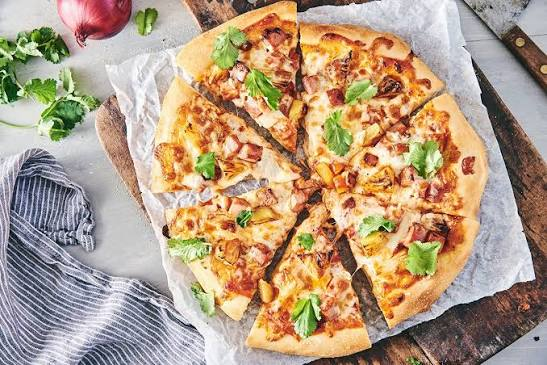

Hawaiian pizza

Hawaiian Pizza recipe
This recipe balances savory ham, crispy bacon, and sweet pineapple over rich mozzarella and a golden crust.
Ingredients
- 1 lb fresh pizza dough, at room temperature
- ½ cup pizza sauce
- 2 cups low-moisture shredded mozzarella cheese
- ½ cup cooked ham or Canadian bacon, sliced or diced
- ½ cup pineapple chunks or rings (fresh or canned), thoroughly patted dry
- 4 strips thick-cut bacon, cooked and crumbled
- 1 tbsp extra-virgin olive oil (for brushing)
- Optional seasonings: Dried oregano, garlic powder, or red pepper flakes
Instructions
- Preheat your oven to 450°F (230°C). If you have a pizza stone, place it inside while the oven heats up to ensure a browner, crispier crust.
- Prep the pineappleby pressing the pieces between paper towels. Removing the excess juice keeps the pizza from becoming soggy during baking.
- Shape the doughinto an even 12-inch circle on a lightly floured surface. Transfer it to an oiled baking sheet or a floured pizza peel. Poke holes across the dough with a fork to stop large air bubbles from forming.
- Brush a thin layer of olive oil over the surface of the dough, leaving a small border for the crust.
- Layer your ingredients starting with the pizza sauce, followed by a generous layer of mozzarella. Evenly distribute the ham, dried pineapple chunks, and crumbled bacon across the cheese
- Bake for 12 to 15 minutes. The pizza is ready when the outer crust is golden brown and the cheese is fully melted and bubbly.
- Finish and serve. Remove from the oven and sprinkle with a pinch of dried oregano or red pepper flakes if desired. Let it rest for 5 minutes before slicing.
back the Home page